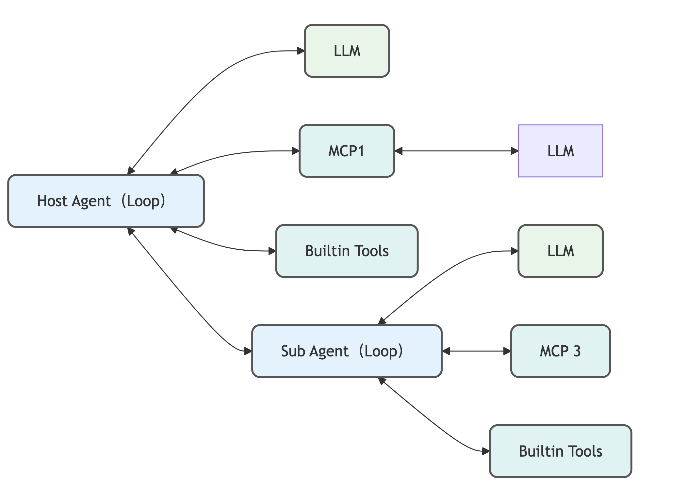
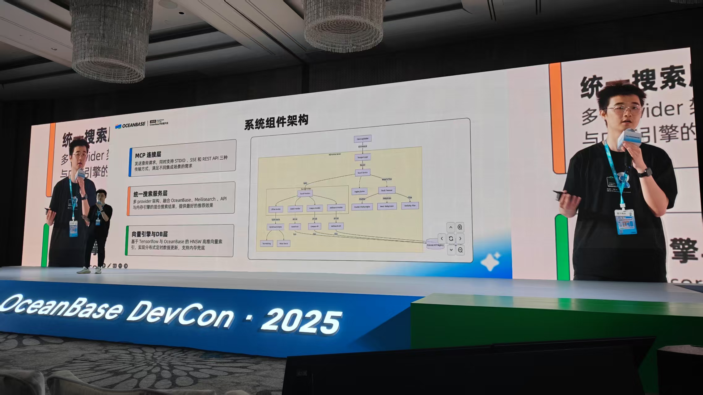

-
- Experience.
Work Projects
-
Ant Group · Ant Insurance FinTech 2024.06 - Present
Project owner for MCP and Insurance Quick Check; since 2026.09, leading Da Bao · Business Harness, incubated by Ant Xiaobao, coordinating three engineers on Agent-driven business improvement.
-
Da Bao · Business Harness (New Initiative) 2026.09 - Present
Lead the design and development of a business Harness on Codex App Server, providing capability discovery, execution traces, sandbox experiments, and evaluation gates to move Agents from generating code to delivering verifiable business improvements.
Integrated Ant Xiaobao and Insurance Quick Check, operating a Bad Case → diagnosis and repair → sandbox validation → PR / controlled release → production feedback loop. Current metrics: 200 issues identified per week on average, 70% AI participation in issue resolution, and a 4% basic-issue rate. Now expanding into business-growth strategy optimization.
-
Insurance Quick Check · Architecture / Context / Page AIGC 2025.06 - 2026.08 Details

Project owner for the Ant Insurance homepage vertical-search entry. Coordinated two application, one algorithm, two search/recommendation, and three frontend engineers across teams; led the architecture and production pipeline across context assets, page AIGC, and Chatbot. A Runtime-Executor-SessionPool Harness supports multiple production workflows and is partly reused by risk-control and post-sales teams. Serves 8M Agent MAU with peak online traffic around 2,000 RPM.Produced structured context from policy documents, OCR materials, and product facts for page AIGC and Chatbot use. Across about 20,000 products and 100,000+ tasks, long-running scheduling, automatic retries, and quality validation achieved 100% final delivery success. Over a rolling 200+ sample set, the evaluator measures completeness, faithfulness, logical expression, and compliance at about 98% accuracy. Meta-evaluation uses RCR (Repeat-Consistency Rate) to measure stability, currently about 90%; established ESF (Expert-Score Reproducibility) from scratch, aligning expert judgments by Checkpoint and reaching about 70%.
-
Chatbot · Product-Pool RAG / Embedding / A2UI 2025.06 - 2026.08 Details
The Chatbot separates product selection from product presentation. Algorithm / search teams own Agentic Search selection on top of my Harness; I owned the product-pool RAG / Embedding pipeline, including query embedding, Elasticsearch retrieval, concurrent fallback, and source navigation over product materials.
Led the A2UI backend protocol and event stream, validating and finalizing the contract through a full-stack demo. The event stream drives the frontend team’s implementation of interactive cards and shelves; I owned the protocol and backend path, while frontend engineers owned production rendering, enabling more complex and flexible generative UI than fixed interfaces.
-
MCP / Tool Calling Toolchain 2024.12 - 2025.06 Details
Led MCPBridge and the Ant Insurance domain MCP Server, exposing 100+ existing HTTP / HSF services—business data, rules, retrieval, and analytics—as reusable Agent tools.
Designed unified Tool Schemas, discovery, argument construction, error feedback, and context enrichment to support the OneAgent + MCPs domain-Agent pattern.
-
-
Taotian Group · Tao Factory 2021.06 - 2024.06
Worked on business-finance integration and pre-sales AI, spanning complex data platforms, RAG knowledge bases, intelligent Q&A, recommendation, and business automation.
-
RAG Knowledge Base and Intelligent Q&A 2023.10 - 2024.06 Details
 Built a multi-source RAG pipeline integrating merchant, operator, algorithmic recommendation, and missed-query knowledge for full-category pre-sales and after-sales Q&A.
Built a multi-source RAG pipeline integrating merchant, operator, algorithmic recommendation, and missed-query knowledge for full-category pre-sales and after-sales Q&A.Designed multi-path retrieval, LLM reranking, answer generation, and missed-query feedback as a continuously improving data-product loop.
-
Money-Bill-Invoice Integrated Data Platform 2022.10 - 2023.10 Details
Led automation and integration for settlement, billing, and supplier invoicing across 10+ billing scenarios and tens of billions of records using MaxCompute, PostgreSQL, and BigTable.
Built a domain DSL for billing and accounting rules, reducing siloed development cycles to one week; published as a best practice by Alibaba Technology.
-
Open Source
-
MCPAdvisor 2025.05 Details Source

Developed MCPAdvisor to manage MCPs with MCP: natural-language intent drives MCP Server retrieval, evaluation, and installation.Focused on Agent Tool Discovery / Selection / Installation; won 2nd Place at the 2025 OceanBase AI Hackathon as team leader.
-
WritingHelper 2021.02 Details Source
Independently developed a VS Code writing assistant using LSP, Trie, and Chain of Responsibility for English phrase completion and Chinese translation, accumulating 16,000+ downloads.
An early IDE / coding-tool engineering project.
-
- Skills.
Agent Harness / Runtime: Runtime, Executor, Session Pool, event streams, tool scheduling, long-running task governance, session state, and incident analysis
Agent Applications / AIGC: structured context production, offline / online hybrid generation, A2UI protocols, and financial-domain delivery
Evaluation / RAG / MCP: generation and meta-evaluation loops, vector retrieval and source navigation, Tool Schemas, and domain MCP Servers
Engineering / Data: Python, Java, React, PostgreSQL, Elasticsearch, MaxCompute, Flink, MySQL, and BigTable

Yihui Wang (Halley)
5 years in backend and AI Agent engineering; built the 8M-MAU Insurance Quick Check Agent and Harness from 0 to 1, now leading “Da Bao · Business Harness”, a new business initiative
-
- Basic info.
- Yihui Wang (Halley) / Male / 1997
- Work Experience:5 Years / P7
- Education:
Peking University2019–2021Software Engineering · Second Bachelor Degree · Rank 15/139Shihezi University2015–2019Rank 1/69Chongqing University2017–2018Exchange · Rank 24/100- EnglishCET-6 · Technical essay
- Blog: xiaohui.cool
- GitHub: github.com/istarwyh
- Online Resume: istarwyh.github.io/resume-it
-
- Contact.
- Email: yihui.wang@pku.edu.cn
- Phone: +86-15955311246
- WeChat: istarwyh
-
- Application.
- Agent Architect / Agent Application Lead
-
- Honors.
- 2026
Insurance ACE | AI Pioneer- 2025
OceanBase AI Hackathon | 2nd Place / Team Leader | MCPAdvisor- 2025
Alibaba & Ant Technical Honors | ATA Best Individual Agent Practice, Ant Outstanding Creator, and Insurance FinTech AI Star- 2025
Ant Open Source Training Camp | Best Contribution Award: AgentUniverse PR #202 -
- Influence.
- Technical Talks
CCF TF #179 and AI Maker Shanghai; invited to share Agent Native, Harness Engineering, and AI Coding with Gaode, Ping An Health Insurance, and multiple Alibaba / Ant technology teams- Technical Writing
Republished by Alibaba Cloud Developer: 10,000 views and 1,300+ shares; business-finance integration practice published by Alibaba Technology